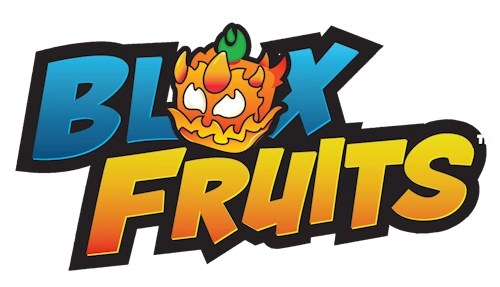

Blox Fruits

| Platform | Roblox |
|---|---|
| Developer | Gamer Robot Inc |
| Genre | Adventure, RPG |
| Inspired by | One Piece |

Welcome to the Blox Fruits Wiki
Blox Fruits is a popular Roblox game where players become pirates or marines, sail across the seas, and fight their way to the top. The game is inspired by the anime and manga One Piece.
What is this game about?
Players train their level, collect Devil Fruits that give special powers, and learn fighting styles and swords. They explore islands, defeat bosses, and join raids with other players. As you level up, you travel to new seas with tougher enemies.
Where to start
New here? Follow these steps to start your adventure:
- Pick a team: Pirates or Marines.
- Complete quests on the starting island to gain levels.
- Buy or find your first Devil Fruit.
- Unlock a fighting style and a sword.
- Sail to the Second Sea at level 700.
Cool blox fruits images
Check out the Gallery to see the three seas, learn about fruits and races on the Fruits & Facts page, watch a gameplay clip on the Video page, and find more resources on the Links page.